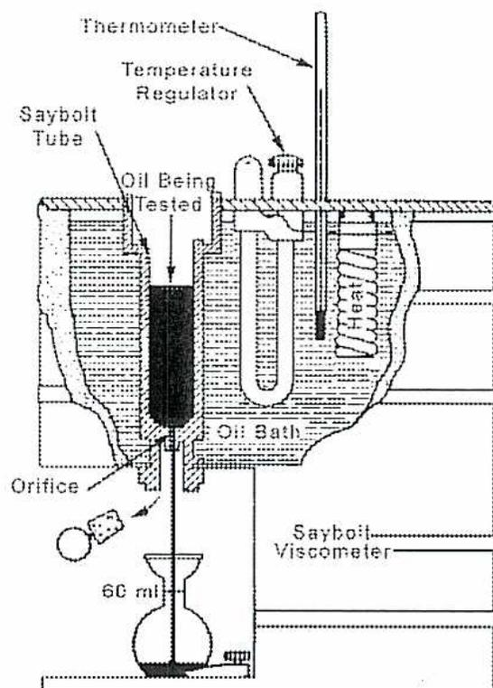
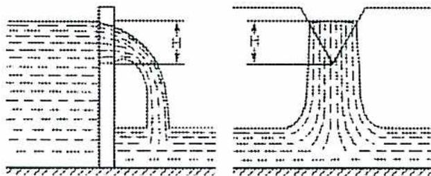
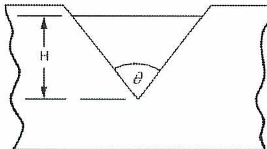
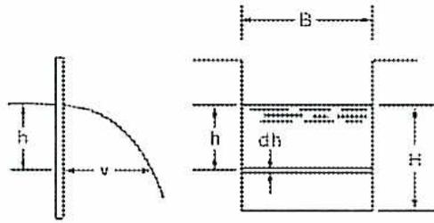
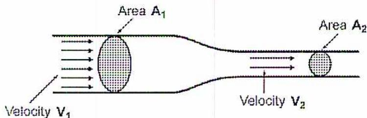
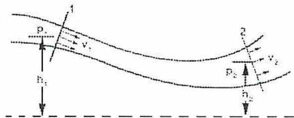
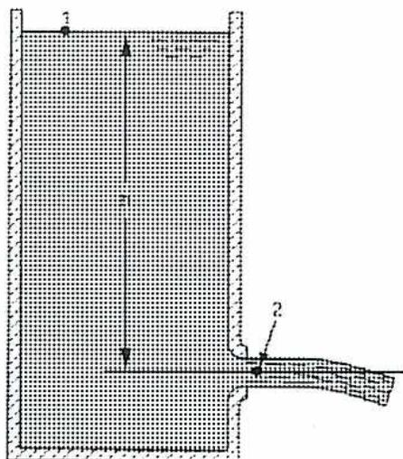
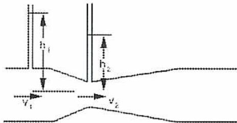

Fluid Mechanics 12
Learning Outcome
When you complete this learning material, you will be able to:
Perform calculations related to fluid flows and pressures.
Learning Objectives
You will specifically be able to complete the following tasks:
- 1. Describe the basics of fluid mechanics.
- 2. Perform calculations related to pressure in a fluid.
- 3. Define and calculate thermal expansion of a vessel and its liquid contents.
- 4. Describe flow in open channels and calculate fluid flow through a weir.
- 5. Describe liquid flow in a pipe using the continuity equation.
- 6. Apply the law of conservation of energy to fluid flow and define Bernoulli's equation.
- 7. Calculate fluid flow from a vessel orifice.
- 8. Calculate flow using a venturi meter.
Objective 1
Describe the basics of fluid mechanics.
FLUID MECHANICS
Fluid mechanics is the study of the behaviour of fluids, either liquids or gases. The study of fluids at rest is called fluid statics, and the study of fluids in motion is called fluid dynamics.
Liquids are generally incompressible, and therefore, take the same shape as the container, possibly with a free surface if the volume of the fluid is less than that of the container.
Gases are compressible and will usually fill the container that they are in. Since liquids turn into gases, under certain pressure and temperature conditions, fluids may change from one to the other and containers may contain a combination of liquid and gas.
PROPERTIES OF FLUIDS
There are several basic properties of fluids that are used to perform calculations of fluid behaviour:
- • Density
- • Relative density
- • Specific weight
- • Viscosity
Density
Density ( \( \rho \) , the Greek symbol rho) is the amount of mass ( \( m \) ) per unit volume ( \( V \) ) of a fluid.
The equation for density is:
$$ \text{Density} = \frac{\text{mass}}{\text{volume}} \quad \text{or} $$ $$ \rho(\text{kg/m}^3) = \frac{m(\text{kg})}{V(\text{m}^3)} $$
Because liquids are incompressible, the volume remains the same except for small changes due to pressure and temperature. Density remains essentially the same at all times. It is standard in the oil and gas industry to define liquid density at atmospheric pressure (101.325 kPa) and 15°C. Although other standards exist, there is little practical difference.
Since gases expand to fill the volume of the container, the density changes depending on the situation. Therefore, it is necessary to define the density of a gas based on a standard set of pressure and temperature conditions. The most common standard is 15°C and atmospheric pressure. For flow calculations, volume is expressed in terms of standard cubic meters (a cubic meter of fluid at standard conditions of 15°C and 101.325 kPa).
Relative Density
Instead of using actual densities, it is convenient to express density as a relative density, as compared to that of water. The relative density (RD) of a fluid is the ratio of its density ( \( \rho \) ) to the density of water at 15°C and 101.325 kPa. The density of water is 1000 kg/m 3 .
The equation for relative density is:
$$ RD = \frac{\rho}{1000 \text{ kg/m}^3} $$
Some common relative densities are provided in Table 1.
Table 1
Common Densities and Relative Densities
| Type of Fluid | Density, kg/m 3 | Relative Density |
|---|---|---|
| Water, at 0°C | 1000 | 1.0 |
| Water, at 100°C | 958 | 0.958 |
| Lubricating oil (average) | 900 | 0.9 |
| Mercury | 13,540 | 13.54 |
| Gasoline | 680 | 0.68 |
| Medium fuel oil | 852 | 0.852 |
| Heavy fuel oil | 906 | 0.906 |
| Air, at -40°C | 1.514 | 0.001514 |
| Air, at 0°C | 1.292 | 0.001292 |
| Air, at 120°C | 0.8978 | 0.0008978 |
| Aluminum | 2700 | 2.7 |
| Natural gas (average) | 600 | 0.6 |
Example 1
A tank with a volume of \( 5 \text{ m}^3 \) is filled with oil which has a relative density of 0.89. What is the mass of the oil?
Answer
Using equation \( RD = \frac{\rho}{1000} \) , the density of the oil is:
$$ \begin{aligned} RD &= \frac{\rho}{1000 \text{ kg/m}^3} \\ \rho &= RD \times 1000 \text{ kg/m}^3 \\ &= 0.89 \times 1000 \text{ kg/m}^3 \\ &= 890 \text{ kg/m}^3 \end{aligned} $$
Therefore, using equation \( \rho(\text{kg/m}^3) = \frac{m(\text{kg})}{V(\text{m}^3)} \) , the mass of the oil is:
$$ \begin{aligned} \rho(\text{kg/m}^3) &= \frac{m(\text{kg})}{V(\text{m}^3)} \\ m &= \rho \text{ kg/m}^3 \times V \text{ m}^3 \\ m &= 890 \text{ kg/m}^3 \times 5 \text{ m}^3 \\ m &= 4450 \text{ kg (Ans.)} \end{aligned} $$
Specific Weight
Specific weight is the weight ( \( w \) ) of a fluid per unit volume. Weight is related to mass by means of Newton's second law ( \( w = mg \) ) with units in N (newtons).
The formula for specific weight, denoted by the Greek symbol \( \gamma \) (gamma), is:
$$ \gamma(\text{kN/m}^3) = \frac{w}{V} $$
The specific weight of water is \( 9.81 \text{ kN/m}^3 \) . This value can be used to calculate the specific weight for any fluid (in \( \text{kN/m}^3 \) ) if its relative density (RD) is known by the equation:
$$ \gamma = 9.81(\text{kN/m}^3) \times RD $$
Some common specific weights are provided in Table 2.
Table 2
Specific Weights
| Type of Fluid | Specific Weight \( \gamma \) , kN/m 3 |
|---|---|
| Ethyl Alcohol | 7.74 |
| Gasoline | 6.67 |
| Glycerin | 12.40 |
| Mercury | 133.00 |
| Water, at 15°C | 9.80 |
Viscosity
Viscosity expresses the reluctance to flow by a fluid acted upon by an external force. The coefficient of absolute viscosity of a fluid is a measure of its resistance to internal deformation or shear.
Measurement of absolute viscosity is carried out experimentally, the basic principle being that if a film of liquid, such as mineral oil, is placed between two parallel planes with the bottom one held stationary and the top one of known area moved at constant velocity, then the force required to maintain this velocity will depend upon the resistance to shear of the particular fluid being tested.
Molasses is a highly viscous fluid; water is much less viscous. The viscosity of a gas is small compared to that of water.
The unit of dynamic viscosity in the SI system is the pascal second (Pa·s) or millipascal second (m Pa·s)
Kinematic viscosity is the ratio of the absolute viscosity to the mass density. In the SI system the unit of kinematic viscosity is the square metre per second (m 2 /s) or square millimetre per second (mm 2 /s)
The measurement of the absolute viscosity of fluids (especially gases and vapours) requires elaborate equipment and considerable experimental skill. On the other hand, a rather simple instrument can be used for measuring the kinematic viscosity of oils and other viscous liquids.
The instrument adopted as a standard in this country is the Saybolt Universal Viscometer, shown in Fig. 1. In measuring kinematic viscosity with this instrument, the time required for a small volume of liquid to flow through an orifice is determined; consequently the “Saybolt viscosity” of the liquid is given in seconds. For very viscous liquids, the Saybolt Furol instrument is used.

Figure 1
Saybolt Viscosimeter
Objective 2
Perform calculations related to pressure in a fluid.
DEFINITION OF PRESSURE
Pressure ( \( p \) ) is defined as the force ( \( F \) ) applied by a fluid on a unit area ( \( A \) ). This can be stated by the equation (units are \( \text{N/m}^2 \) or Pa): ____
$$ p = \frac{F}{A} $$
Example 2
A hydraulic piston with a diameter of 10 cm is required to exert a force of 2000 N. What does the pressure need to be in the hydraulic fluid?
Answer
The cross-sectional area of the piston is
$$ \begin{aligned} A &= \pi r^2 \\ &= \pi(0.05 \text{ m})^2 \\ &= 0.00785 \text{ m}^2 \end{aligned} $$
From equation \( p = \frac{F}{A} \) , the pressure is:
$$ \begin{aligned} p &= \frac{F}{A} \\ &= \frac{2000 \text{ N}}{0.00785 \text{ m}^2} \\ &= 254.8 \text{ kPa (Ans.)} \end{aligned} $$
PRESSURE IN A FLUID
Two principles describing pressure in fluids, also known as Pascal's laws, are as follows:
- 1. Pressure acts in all directions in a fluid
- 2. Where a fluid meets a solid surface, the pressure acts perpendicular to the surface
Since liquids are denser than gases, changes in elevation have a greater effect on pressure in fluids than pressure in gases. The pressure of a liquid at a specific elevation is determined by the height of the fluid above it.
This is expressed by the equation:
$$ p = hw $$
The elevation ( \( h \) ) is in meters. The specific weight ( \( w \) ) of the liquid is obtained from Newton's second law, or from the equation:
$$ w = \rho g $$
For water, this means that:
$$ \begin{aligned} w &= \rho g \\ &= 1000 \text{ kg/m}^3 \times 9.81 \text{ N/kg} \\ &= 9.81 \text{ kN/m}^3 \end{aligned} $$
Therefore, the equation can also be written as:
$$ p = h\rho g $$
Note: Pressure ( \( p \) ) is the difference in pressure between two elevations. If the pressure at the top of a fluid column is higher (or lower) than atmospheric, take the fluid column pressure into account.
Example 3
What is the pressure exerted on a submarine at 200 m if the relative density of seawater is 1.03?
Answer
When relative density is known, use equation \( RD = \frac{\rho}{1000 \text{ kg/m}^3} \) to calculate density:
$$ \begin{aligned} RD &= \frac{\rho}{1000 \text{ kg/m}^3} \\ \rho &= 1000 \text{ kg/m}^3 \times RD \\ \rho &= 1000 \text{ kg/m}^3 \times 1.03 \\ \rho &= 1030 \text{ kg/m}^3 \end{aligned} $$
Pressure is found using the equation \( p = h\rho g \) ,
$$ \begin{aligned} p &= h\rho g \\ &= 200 \text{ m} \times 1030 \text{ kg/m}^3 \times 9.81 \text{ N/kg} \\ &= 2021 \text{ kPa (Ans.)} \end{aligned} $$
FORCE ON A SUBMERGED SURFACE
With knowledge of the pressure exerted by a fluid, it is possible to calculate the force being applied to a solid surface. If the pressure varies across a surface, it is necessary to find the average pressure. The location of the average pressure is the centre of pressure. The centre of pressure is important in aerodynamics since it determines the direction and magnitude of motion of objects (such as aircraft).
Pressure normally increases in a linear proportion with elevation.
Example 4
What is the total force on the bottom and on each side of a tank 6 m by 10 m that holds water to a depth of 5 m?
Answer
The pressure at the bottom of the tank is found using equation \( p = h\rho g \) :
$$ \begin{aligned} p &= h\rho g \\ &= 5 \text{ m} \times 1000 \text{ kg/m}^3 \times 9.81 \text{ N/m}^2 \\ &= 49.05 \text{ kPa} \end{aligned} $$
The force on the bottom of the tank is determined by equation \( F = pA \) :
$$ \begin{aligned} F &= pA \\ &= 49.05 \text{ kPa} \times (6 \text{ m} \times 10 \text{ m}) \\ &= 2943 \text{ kN (Ans.)} \end{aligned} $$
The average pressure on the sides of the tank is one half of the pressure at the bottom, or 24.53 kPa (49.05/2).
The force on the long side of the tank is determined by equation \( F = pA \) :
$$ \begin{aligned} F &= pA \\ &= 24.53 \text{ kPa} \times (5 \text{ m} \times 10 \text{ m}) \\ &= 1226.5 \text{ kN (Ans.)} \end{aligned} $$
The force on the short side of the tank is determined by equation \( F = pA \) :
$$ \begin{aligned} F &= pA \\ &= 24.53 \text{ kPa} \times (5 \text{ m} \times 6 \text{ m}) \\ &= 735.9 \text{ kN (Ans.)} \end{aligned} $$
Objective 3
Define and calculate thermal expansion of a vessel and its liquid contents.
THERMAL EXPANSION
For solids, the expansion of an object is determined using the coefficient of thermal (or linear) expansion. For fluids, volumetric expansion is more appropriate.
The change in volume is found by the equation:
$$ \Delta V = V \beta (T_2 - T_1) $$
where \( \beta \) is the coefficient of volumetric (or cubical) expansion (as measured in change in volume per \( ^{\circ}\text{C} \) ). For objects of constant density, expansion is equal in all directions. The coefficient of volumetric expansion ( \( \beta \) ) is three times that for linear expansion ( \( \alpha \) ). Thus, the equation can also be written as
$$ \Delta V = V 3\alpha (T_2 - T_1) $$
Example 5
A tank of oil with a volume of \( 10 \text{ m}^3 \) is heated from \( 15^{\circ}\text{C} \) to \( 190^{\circ}\text{C} \) . If the coefficient of volumetric expansion is \( 0.9 \times 10^{-3} \) per \( ^{\circ}\text{C} \) , what is the volume at \( 190^{\circ}\text{C} \) ?
Answer
The change in volume is found using equation \( \Delta V = V \beta (T_2 - T_1) \) :
$$ \begin{aligned}\Delta V &= V \beta (T_2 - T_1) \\ &= 10 \text{ m}^3 \times (0.9 \times 10^{-3} / ^{\circ}\text{C}) \times (190 - 15)^{\circ}\text{C} \\ &= 10 \text{ m}^3 \times (0.0009 / ^{\circ}\text{C}) \times (175)^{\circ}\text{C} \\ &= 0.009 \text{ m}^3 / ^{\circ}\text{C} \times 175^{\circ}\text{C} \\ &= 1.575 \text{ m}^3\end{aligned} $$
Therefore, the new volume is:
$$ \begin{aligned} V_2 &= V_1 + \Delta V \\ &= 5 \text{ m}^3 + 0.45 \text{ m}^3 \\ &= 5.45 \text{ m}^3 \text{ (Ans.)} \end{aligned} $$
DIFFERENTIAL VOLUMETRIC EXPANSION
If two different materials change in temperature, they will expand or contract at different rates. Since a solid object usually expands less than the fluid it holds, this means that the liquid requires a larger volume. If a tank is almost full, it may overflow if the temperature increases. For the same reason, fluids contained in piping require an overflow tank to prevent spillage.
Example 6
A section of pipe 14 m long, with an internal diameter of 3 cm, is filled with oil and is heated by \( 28^\circ\text{C} \) . What additional volume has to be accommodated in the system to contain the oil overflow?
Given: Coefficient of thermal expansion for steel -
\(
12 \times 10^{-6}
\)
per
\(
^\circ\text{C}
\)
Coefficient of volumetric expansion for oil -
\(
0.9 \times 10^{-3}
\)
per
\(
^\circ\text{C}
\)
Answer
The volume of the piping is
$$ \begin{aligned} V &= 1400 \text{ cm} \times \pi (1.5 \text{ cm})^2 \\ &= 9896 \text{ cm}^3 \end{aligned} $$
The increase in the volume of the piping due to the expansion of the steel is found using equation \( \Delta V = V 3\alpha (T_2 - T_1) \) :
$$ \begin{aligned} \Delta V &= V 3\alpha (T_2 - T_1) \\ &= 98963 \text{ cm}^3 \times 3 \times 12 \times 10^{-6} / ^\circ\text{C} \times 28^\circ\text{C} \\ &= 98963 \text{ cm}^3 \times 0.0000036 / ^\circ\text{C} \times 28^\circ\text{C} \\ &= 9.976 \text{ cm}^3 \end{aligned} $$
The increase in the volume of the oil is found using equation \( \Delta V = V \beta (T_2 - T_1) \) :
$$ \begin{aligned}\Delta V &= V \beta (T_2 - T_1) \\ &= 9896 \text{ cm}^3 \times 0.9 \times 10^{-3} / ^\circ\text{C} \times 28 ^\circ\text{C} \\ &= 9896 \text{ cm}^3 \times 0.0009 / ^\circ\text{C} \times 28 ^\circ\text{C} \\ &= 249.38 \text{ cm}^3\end{aligned} $$
The difference in volumes is the oil overflow which is:
$$ \begin{aligned}\text{Oil overflow} &= 249.38 - 9.976 \\ &= \mathbf{239.40 \text{ cm}^3} \text{ (Ans.)}\end{aligned} $$
Objective 4
Describe flow in open channels and calculate fluid flow through a weir.
FLOW IN OPEN CHANNELS
One aspect of fluid mechanics, hydraulics, is concerned with liquid flow in open channels. For example, this applies to water supply, drainage and sewage systems, and water cooling systems in industry.
A weir is an obstruction placed across a channel to control flow. It is also used to measure the flow rate. An example is shown in Fig. 2.

The image contains two diagrams of weirs. The left diagram shows a rectangular weir where water flows over a flat top. A vertical line indicates the water level upstream, and a dashed line shows the water level downstream. The height difference between the two levels is labeled 'H'. The right diagram shows a V-shaped weir, where water flows over a triangular notch. Similar to the first diagram, it shows the upstream water level and the height 'H' from the notch's vertex to the water surface.
Figure 2
A Weir Used to Measure Flow Rate
In order to measure the flow, a notch is cut into the weir. The flow rate is a function of the shape of the notch, and the height of the flow through the notch. Rectangular notches are used for larger flow rates. Triangular, or V, notches are used for lower flow rates. The geometry of a V-notch is illustrated in Fig. 3.

The diagram shows a cross-section of a V-shaped notch. The vertical height from the bottom vertex of the V to the horizontal water surface is labeled 'H'. The angle at the vertex of the V, which is the notch angle, is labeled with the Greek letter theta (
\( \theta \)).
Figure 3
Geometry of a V-Notch
The general equation for flow through a V-notch is
$$ Q = 2.635 \tan \frac{\theta}{2} H^{\frac{5}{2}} $$
where flow ( \( Q \) ) is measured in \( \text{m}^3/\text{s} \) , \( \theta \) is the angle of the notch, and \( H \) is the height of the fluid in metres (m). The constant, 2.635, is a function of the discharge coefficient and so may vary.
The best angle for the notch depends on the expected range of flow rates, but an angle of \( 90^\circ \) is common. Since \( \tan \frac{90}{2} = 1 \) , the equation becomes:
$$ Q = 2.635 H^{\frac{5}{2}} $$
Since it is convenient to choose angles that yield even fractions of the flow, a half notch has an angle of \( 53^\circ 8' \) which results in the equation:
$$ Q = 2.3175 H^{\frac{5}{2}} $$
A quarter notch requires an angle of close to \( 28^\circ \) .
Example 7
A weir with a \( 90^\circ \) notch is 0.5 m high. What is the maximum flow that it can measure?
Answer
The maximum flow is calculated using equation \( Q = 2.635 H^{\frac{5}{2}} \) :
$$ \begin{aligned} Q &= 2.635 H^{\frac{5}{2}} \\ &= 2.635 \times (0.5)^{\frac{5}{2}} \\ &= 2.635 \times 0.1768 \\ &= 0.4658 \text{ m}^3/\text{s} \text{ (Ans.)} \end{aligned} $$
Rectangular Notch
In Fig. 24, flow over a rectangular notch, \( B \) is the width of the notch, and \( H \) the head of liquid over the bottom of the notch. Consider one elemental strip of fluid area at a depth \( h \) below the surface, having breadth \( B \) and height \( dh \) . The area of the strip will be \( Bdh \) .
Its velocity of flow \( v \) will depend on \( h \) such that:
$$ \text{Velocity (v)} = \sqrt{2gh} $$

Figure 4
Rectangular Notch Flow
The quantity flow through this strip of area will be:
$$ \text{Velocity (v)} \times \text{Area} = \sqrt{2gh} B dh $$
The sum of all such strips from the bottom, where \( h = 0 \) , to the top, where \( h = H \) , can be found by integrating between these limits.
$$ \text{Total flow} = \int_0^H \sqrt{2gh} g B dh $$
Since \( B \) and \( 2g \) are constant quantities:
$$ \text{Flow} = B g \sqrt{2g} \int_0^H h^{1/2} dh $$
$$ \text{Flow} = B g \sqrt{2g} \left[ \frac{h^{1/2} + 1}{1/2 + 1} \right]_0^H $$
$$ \text{Flow} = B g \sqrt{2g} \frac{2}{3} g H^{3/2} $$
To make allowance for friction, contraction of flow and approach velocity, a coefficient of discharge should be included in the above formula. This should be found by test for each notch but will be approx. 0.59 to 0.62.
$$ \text{Flow through rectangular notch} = \frac{2}{3} C_d B \sqrt{2g} \times H^{3/2} \text{ m}^3/\text{s} $$
Example 8
A rectangular notch is 6 m wide. It discharges 270 tonnes of water per minute. Calculate the head over the notch if the discharge coefficient is 0.59.
Answer
The head over the notch is calculated using equation \( \frac{2}{3} C_d B \sqrt{2g} \times H^{\frac{3}{2}} \text{ m}^3/\text{s} \) :
$$ \begin{aligned} 270 \text{ t/min} &= 270 \text{ m}^3/\text{min} \\ &= 4.5 \text{ m}^3/\text{s} \end{aligned} $$
$$ \begin{aligned} \text{Discharge} &= \frac{2}{3} \times C_d \times B \sqrt{2g} \times H^{\frac{3}{2}} \\ &= \frac{2}{3} \times C_d \times B \sqrt{2 \times 9.81} \times H^{\frac{3}{2}} \\ &= \frac{2}{3} \times 0.59 \times 6 \times 4.429 \times H^{\frac{3}{2}} \end{aligned} $$
$$ \text{Head} = \left( \frac{D}{\frac{2}{3} \times 0.59 \times 6 \times 4.429} \right)^{\frac{2}{3}} $$
$$ \text{Head} = \left( \frac{4.5}{\frac{2}{3} \times 0.59 \times 6 \times 4.429} \right)^{\frac{2}{3}} $$
$$ = \left( \frac{4.5}{10.4524} \right)^{\frac{2}{3}} $$
$$ = \sqrt[3]{0.4305^2} $$
$$ \text{Head} = \mathbf{0.5702 \text{ m}} \text{ (Ans.)} $$
Objective 5
Describe liquid flow in a pipe using the continuity equation.
FLOW IN PIPES
Many industrial systems incorporate the flow of liquids through enclosed piping, for example, process, cooling and lubrication systems.
In this module, flow is assumed to be uniform, steady, and laminar.
Flow is uniform if velocity is aligned with the axis of the pipe, and the flow does not re-circulate.
Flow is steady if it does not vary, or fluctuate, at a specific location with respect to time.
Flow is laminar if it moves in layers (laminae) with straight parallel streamlines. At higher velocities, laminar flow starts to break down and becomes turbulent.
Flow can be measured in one of three ways, by:
- • Volume
- • Mass
- • Weight
Volume Flow Rate
The first method used to measure flow is volume flow rate.
It is calculated by the equation:
$$ Q = Av $$
\( Q \) = Flow rate, \( \text{m}^3/\text{s} \)
\( A \) = Cross-sectional area, \( \text{m}^2 \)
\( v \) = Average velocity across the area, \( \text{m/s} \)
Since it is common to express volume flow in litres per minute (L/min), it may be necessary to convert using the equation:
$$ Q(\text{L/min}) = Q(\text{m}^3/\text{s}) \times 60 \text{ (s/min)} \times 1000 \text{ (L/m}^3\text{)} $$
Mass Flow Rate
The second method, mass flow rate, is given by the equation
$$ M = \rho Q $$
\( M \) = Mass flow rate, kg/s
\( \rho \) = Density, kg/m 3
\( Q \) = Flow rate, m 3 /s
Weight Flow Rate
The third method, weight flow rate, is given by the equation
$$ W = \gamma Q $$
\( W \) = Weight flow rate, N/s
\( \gamma \) = Specific weight of the fluid, N/m 3
\( Q \) = Flow rate, m 3 /s
Example 9
A pipe of 10 cm internal diameter carries oil with a relative density of 0.87 at a velocity of 1 m/s. What is the flow rate in terms of volume (both m 3 /s and L/min), weight, and mass?
Answer
The area of the pipe is:
$$ \begin{aligned} A &= \pi r^2 \\ &= \pi (0.05\text{m})^2 \\ &= 0.0079 \text{ m}^2 \end{aligned} $$
Volume flow rate in m 3 /s is given by the equation \( Q = Av \) :
$$ \begin{aligned} Q &= Av \\ &= 0.0079 \text{ m}^2 \times 1 \text{ m/s} \\ &= \mathbf{0.0079 \text{ m}^3/\text{s}} \text{ (Ans.)} \end{aligned} $$
Volume flow in L/min is given by the equation
$$ Q(\text{L/min}) = Q(\text{m}^3/\text{s}) \times 60 \text{ (s/min)} \times 1000 \text{ (L/m}^3\text{):} $$
$$ Q(\text{L/min}) = Q(\text{m}^3/\text{s}) \times 60 \text{ (s/min)} \times 1000 \text{ (L/m}^3\text{)} $$
$$ Q(\text{L/min}) = 0.0079 \text{ m}^3/\text{s} \times 60 \text{ (s/min)} \times 1000 \text{ (L/m}^3\text{)} $$
$$ Q(\text{L/min}) = 474.00 $$
$$ Q(\text{L/min}) = \mathbf{474.00 \text{ L/min}} \text{ (Ans.)} $$
The density of the oil is obtained from the equation \( R.D. = \frac{\rho}{1000 \text{ kg/m}^3} \) :
$$ R.D. = \frac{\rho}{1000 \text{ kg/m}^3} $$
$$ \rho = R.D. \times 1000 \text{ kg/m}^3 $$
$$ \rho = 0.87 \times 1000 \text{ kg/m}^3 $$
$$ \rho = 870 \text{ kg/m}^3 $$
The mass flow rate is given by the equation \( M = \rho Q \) :
$$ M = \rho Q $$
$$ = 870 \text{ kg/m}^3 \times 0.0079 \text{ m}^3/\text{s} $$
$$ = \mathbf{6.8730 \text{ kg/s}} \text{ (Ans.)} $$
The specific weight is calculated using the equation \( \gamma = 9.81 \text{ (kN/m}^3\text{)} \times R.D. \) :
$$ \gamma = 9.81 \text{ (kN/m}^3\text{)} \times R.D. $$
$$ \gamma = 9.81 \times 0.87 $$
$$ \gamma = 8.5347 \text{ kN/m}^3 $$
The weight flow rate is given by equation \( W = \gamma Q \) :
$$ W = \gamma Q $$
$$ = 8.5347 \text{ kN/m}^3 \times 0.0079 \text{ m}^3/\text{s} $$
$$ = 0.0674 \text{ kN/m}^3 $$
$$ = \mathbf{67.40 \text{ N/m}^3} \text{ (Ans.)} $$
PRINCIPLE OF CONTINUITY
The principle of continuity is a simple approach to analyzing flow in pipes. It is based on the law of conservation of mass which states that mass flow is the same at all points in a piping system as long as there are no junctions. Thus, mass flow rates are equal for any two points in a piping system, or
$$ M_1 = M_2 $$
By substituting the equation for volume flow rate, \( Q = Av \) , into the one for mass flow rate, \( M = \rho Q \) , the equation becomes:
$$ M_1 = M_2 $$
$$ \text{but } M = \rho Q $$
$$ \rho Q = \rho Q $$
$$ \text{but } Q = Av $$
$$ \rho Av = \rho Av $$
$$ \rho_1 A_1 v_1 = \rho_2 A_2 v_2 $$
For liquid flow, assume that the densities at any two points are the same. Therefore, the velocities of the flow vary only with the area, as shown in Fig. 5.
$$ A_1 v_1 = A_2 v_2 $$

The diagram illustrates a horizontal pipe that narrows from left to right. On the wider left section, a shaded elliptical cross-section is labeled 'Area A 1 '. Four horizontal arrows point to the right within this section, with a label 'Velocity V 1 ' below them. The pipe then tapers to a narrower section on the right. In this section, another shaded elliptical cross-section is labeled 'Area A 2 '. Two horizontal arrows point to the right within this narrower section, with a label 'Velocity V 2 ' below them. The diagram visually demonstrates that the flow velocity increases as the cross-sectional area decreases.
Figure 5
Simple Flow in a Pipe Showing the Principle of Continuity
Note: These equations work well for liquids, but should only be used for gases with low velocity.
Example 9
A pipe, with an internal diameter of 10 cm, carries water with a velocity of 1 m/s. What is the velocity if the pipe size is reduced to 5 cm?
Answer
The area of the 10 cm pipe is:
$$ \begin{aligned} A &= \pi r^2 \\ &= \pi(0.05 \text{ m})^2 \\ &= 0.0079 \text{ m}^2 \end{aligned} $$
The area of the 5 cm pipe is:
$$ \begin{aligned} A &= \pi r^2 \\ &= \pi(0.025 \text{ m})^2 \\ &= 0.0020 \text{ m}^2 \end{aligned} $$
The velocity in the 5 cm pipe is calculated by using the equation \( A_1 v_1 = A_2 v_2 \) :
$$ \begin{aligned} A_1 v_1 &= A_2 v_2 \\ v_2 &= \frac{A_1 v_1}{A_2} \\ &= \frac{0.0079 \text{ m}^2 \times 1 \text{ m/s}}{0.0020 \text{ m}^2} \\ &= 3.95 \text{ m/s (Ans.)} \end{aligned} $$
Objective 6
Apply the law of conservation of energy to fluid flow and define Bernoulli's equation.
LAW OF CONSERVATION OF ENERGY
A more complete method of analyzing fluid flow is to apply the law of conservation of energy. It states that the total amount of energy in a fluid system remains constant, assuming that no energy is supplied to or removed from the system.
There are three forms of energy that can be exchanged in a fluid system depending on its configuration:
- • Potential energy
- • Kinetic energy
- • Flow energy
Potential Energy
The first form of energy is potential energy (PE or \( E_p \) ). Potential energy is the energy that is stored, or available, in a body due to its position or condition. A body with potential energy is at rest, but if released from its position it will perform work. It is solely due to the body's position that the potential for work exists. The work is done against the force of gravity. Potential energy represents the work required to elevate a mass of fluid over a vertical distance ( \( h \) ).
It is calculated using the equation:
$$ E_p = mgh $$
Kinetic Energy
The second form of energy is kinetic energy (KE or \( E_k \) ). Kinetic energy may be defined as the energy stored in a body due to its motion. By virtue of its motion, such a body has available energy stored up in the event that the force causing motion is removed.
It can be expressed as:
$$ E_k = \frac{1}{2}mv^2 $$
Flow Energy
The third form of energy is flow energy which is due to pressure.
It is expressed as:
$$ E_f = pQ $$
BERNOULLI'S PRINCIPLE
For the total energy to be conserved, it is possible to write an equation for any two points in the fluid system (see Fig. 6) which results in the equations:
$$ E_1 = E_2 $$ $$ E_{f_1} + E_{p_1} + E_{k_1} = E_{f_2} + E_{p_2} + E_{k_2} $$
$$ \text{but } E_p = mgh, E_k = \frac{1}{2}mv^2 \text{ and } E_f = pQ $$
$$ P_1Q_1 + m_1gh_1 + \frac{1}{2}m_1v_1^2 = P_2Q_2 + m_2gh_2 + \frac{1}{2}m_2v_2^2 $$
Since mass appears in each term, the equation can be simplified by removing it.
This results in the Bernoulli equation (units in metres):
$$ h_1 + \frac{P_1}{w} + \frac{v_1^2}{2g} = h_2 + \frac{P_2}{w} + \frac{v_2^2}{2g} $$
Where:
\(
w
\)
= force of gravity on 1 m
3
of fluid (N)
\(
h
\)
= height above datum level (metres)
\(
P
\)
= pressure (N/m
2
or Pa)
\(
v
\)
= velocity of water (metres/second)
The first term represents elevation head, the second pressure head, and the third velocity head.

Figure 6
Fluid Elements Used in Bernoulli's Principle
It is important to recognize the restrictions on Bernoulli's principle, namely:
- 1. It applies only to incompressible fluids since it assumes that the relative density remains the same.
- 2. The flow must be steady and not change with respect to time.
- 3. There cannot be any mechanical device between the two locations that adds or extracts energy from the flow.
- 4. There can be no heat transferred into or out of the system.
- 5. There can be no energy lost due to friction.
When evaluating a flow problem, it is often possible to ignore one or more terms in the equation. For example, if the points are taken at a free surface, the pressure will be zero and the pressure head is assumed to be zero. The velocity will also be zero at a free surface.
Example 10
Water flows through a horizontal pipe which varies in diameter. At one point, the pressure is 140 kPa and the velocity is 1.5 m/s. If the velocity is 15 m/s at another location, what is the pressure?
Answer
Since there is no change in elevation, the elevation head can be ignored and the equation can be written as:
$$ \frac{P_1}{w} + \frac{v_1^2}{2g} = \frac{P_2}{w} + \frac{v_2^2}{2g} $$
$$ P_2 = \left( \frac{P_1}{w} + \frac{v_1^2}{2g} - \frac{v_2^2}{2g} \right) w $$
$$ P_2 = \left( \frac{140 \text{ kPa}}{9.81 \text{ kN/m}^2} + \frac{(1.5 \text{ m/s})^2}{2 \times 9.81 \text{ kN/m}^2} - \frac{(15 \text{ m/s})^2}{2 \times 9.81 \text{ kN/m}^2} \right) \times 9.81 \text{ kN/m}^2 $$
$$ P_2 = (14.2712 + 0.1147 - 11.4679) \times 9.81 \text{ kN/m}^2 $$
$$ P_2 = 2.9180 \times 9.81 \text{ kN/m}^2 $$
$$ \text{Pressure} = 28.63 \text{ kPa (Ans.)} $$
Objective 7
Calculate fluid flow from a vessel orifice.
FLOW FROM A VESSEL ORIFICE
Flow from a vessel, such as a tank, often occurs from an orifice at the bottom, such as the one shown in Fig. 7.

A diagram of a large vessel containing a liquid. A small orifice is located at the bottom right of the vessel wall. Point 1 is marked at the top surface of the liquid. Point 2 is marked at the orifice. A vertical double-headed arrow between the level of point 1 and the level of point 2 is labeled
\( h_1 - h_2 \). A stream of liquid is shown exiting from the orifice.
Figure 7
Flow from a Vessel
The velocity, and thus the flow, can be calculated using Bernoulli's equation. Looking at the three terms in Bernoulli's equation, it can be seen that at point 1 (in Fig.7), the only term that remains is potential energy, or elevation head. At point 2, the pressure term is zero (using atmospheric pressure as the base). The resulting equation is therefore
$$ h_1 + \frac{p_1}{\gamma_w} + \frac{v_1^2}{2g} = h_2 + \frac{p_2}{\gamma_w} + \frac{v_2^2}{2g} $$
$$ h_1 - h_2 = \frac{v_2^2}{2g} $$
If the difference in height, \( h_1 - h_2 \) , is indicated by \( h \) , by rearranging the equation, the velocity becomes:
$$ \begin{aligned}h_1 - h_2 &= \frac{v_2^2}{2g} \\ \text{but } h_1 - h_2 &= h \\ h &= \frac{v_2^2}{2g} \\ v_2^2 &= 2g \times h \\ v_2 &= \sqrt{2gh}\end{aligned} $$
The flow through the opening is derived by substituting \( v_2 = \sqrt{2gh} \) into the equation \( Q = A_2 v_2 \) so that the volume flow is:
$$ \begin{aligned}Q &= A_2 v_2 \\ \text{but } v_2 &= \sqrt{2gh} \\ Q &= A_2 \sqrt{2gh}\end{aligned} $$
In practice, the velocity is somewhat less, and the flow is reduced because the effective area is smaller due to contraction of the jet flow. This leads to the need for a coefficient of discharge (always less than 1) to allow for correction. The equation then becomes
$$ Q = C_d A \sqrt{2gh} $$
Example 11
Water flows from a 10 cm diameter hole in the side of a tank 6 m below the surface. If the coefficient of discharge is 0.6, what is the flow?
Answer
The area of the orifice is:
$$ \begin{aligned} A &= \pi r^2 \\ &= \pi(0.05 \text{ m})^2 \\ &= 0.0079 \text{ m}^2 \end{aligned} $$
The flow is obtained from the equation \( Q = C_d A \sqrt{2gh} \) :
$$ \begin{aligned} Q &= C_d A \sqrt{2gh} \\ &= 0.6 \times 0.0079 \text{ m}^2 \sqrt{2 \times 9.81 \text{ m/s}^2 \times 6 \text{ m}} \\ &= 0.0047 \sqrt{117.72} \\ &= 0.0047 \times 10.8499 \\ &= 0.0510 \text{ m}^3/\text{s} \\ &= \mathbf{51.0 \text{ l/s}} \text{ (Ans.)} \end{aligned} $$
Objective 8
Calculate flow using a venturi meter.
VENTURI METERS
Bernoulli's principle can be used to measure flow rates using a range of devices based on the fact that flow can be correlated to the drop in pressure due to an increase in flow velocity. One such device is the venturi meter shown in Fig. 8.

Figure 8
Venturi Meter
Flow rate can be derived from a combination of Bernoulli's equation and the equation of continuity.
Bernoulli's equation can be written without the elevation head terms since the change in elevation is zero when the venturi meter is horizontal (and is still quite small even when it is installed vertically).
The resulting equation is:
$$ \frac{p_1}{w} + \frac{v_1^2}{2g} = \frac{p_2}{w} + \frac{v_2^2}{2g} $$
If the cross-sectional areas are \( A_1 \) and \( A_2 \) , the equation of continuity can be written as:
$$ A_1 v_1 = A_2 v_2 $$
$$ v_2 = \frac{A_1 v_1}{A_2} $$
Substituting this in Bernoulli's equation, \( h_1 + \frac{P_1}{w} + \frac{v_1^2}{2g} = h_2 + \frac{P_2}{w} + \frac{v_2^2}{2g} \) , we can solve for velocity at point 1 (in Fig.6) as follows:
$$ \frac{P_1}{w} + \frac{v_1^2}{2g} = \frac{P_2}{w} + \frac{v_2^2}{2g} $$
$$ \frac{P_1}{w} - \frac{P_2}{w} = \frac{v_2^2}{2g} - \frac{v_1^2}{2g} $$
$$ 2g \frac{(P_1 - P_2)}{w} = v_2^2 - v_1^2 $$
$$ \text{But } v_2 = \frac{A_1 v_1}{A_2} $$
$$ 2g \frac{(P_1 - P_2)}{w} = \left( \frac{A_1 v_1}{A_2} \right)^2 - v_1^2 $$
$$ 2g \frac{(P_1 - P_2)}{w} = v_1^2 \left( \frac{A_1^2}{A_2^2} - 1 \right) $$
$$ v_1 = \sqrt{\frac{2g \frac{(P_1 - P_2)}{w}}{\left( \frac{A_1^2}{A_2^2} - 1 \right)}} $$
Flow rate can be calculated from velocity by the equation, \( Q = Av \) , with the addition of a coefficient of discharge to account for the fact that there are some minor losses, so that:
$$ Q = A_1 v_1 $$
$$ \text{But } v_1 = \sqrt{\frac{2g \frac{(P_1 - P_2)}{w}}{\left(\frac{A_1^2}{A_2^2} - 1\right)}} $$
$$ Q = A_1 C_d \sqrt{\frac{2g \frac{(P_1 - P_2)}{w}}{\left(\frac{A_1^2}{A_2^2} - 1\right)}} $$
Example 12
A venturi meter with a pipe diameter of 30 cm and a throat diameter of 15 cm is used to determine the flow rate of water. If the pressures are measured as 138 kPa and 117 kPa, respectively, and the coefficient of discharge is 0.98, what is the flow rate?
Answer
The area of the pipe is
$$ \begin{aligned} A_1 &= \pi r^2 \\ &= \pi (0.15 \text{ m})^2 \\ &= 0.0707 \text{ m}^2 \end{aligned} $$
The ratio of the areas is:
$$ \begin{aligned} \frac{A_1^2}{A_2^2} &= \left(\frac{\pi r_1^2}{\pi r_2^2}\right)^2 \\ &= \frac{r_1^4}{r_2^4} \\ &= \frac{30 \text{ cm}^4}{15 \text{ cm}^4} \\ &= 2^4 \\ &= 16 \end{aligned} $$
Since the gravitational force on water \( w \) is \( 9.81 \text{ kN/m}^3 \) the flow, using equation
$$ Q = A_1 C_d \sqrt{\frac{2g \frac{(P_1 - P_2)}{w}}{\left(\frac{A_1^2}{A_2^2} - 1\right)}} \text{ is:} $$
$$ \begin{aligned} Q &= A_1 C_d \sqrt{\frac{2g \frac{(P_1 - P_2)}{w}}{\left(\frac{A_1^2}{A_2^2} - 1\right)}} \\ &= 0.0707 \text{ m}^2 \times 0.98 \sqrt{\frac{2 \times 9.81 \text{ m/s}^2 \frac{(138 \text{ kPa} - 117 \text{ kPa})}{9.81 \text{ kN/m}^3}}{(16 - 1)}} \\ &= 0.0693 \text{ m}^2 \sqrt{\frac{2 \times 9.81 \text{ m/s}^2 \times \frac{21 \text{ kPa}}{9.81 \text{ kN/m}^3}}{15}} \\ &= 0.0693 \text{ m}^2 \sqrt{\frac{2 \times 9.81 \text{ m/s}^2 \times 2.1407}{15}} \\ &= 0.0693 \text{ m}^2 \sqrt{\frac{42.001 \text{ m}^2/\text{s}^2}{15}} \\ &= 0.0693 \text{ m}^2 \sqrt{2.8001 \text{ m}^2/\text{s}^2} \\ &= 0.0693 \text{ m}^2 \times 1.6733 \text{ m}^2/\text{s}^2 \\ &= 0.1160 \text{ m}^3/\text{s} \\ &= 0.1160 \text{ m}^3/\text{s} \times 1000 \text{ l/m}^3 \times 60 \text{ s/min} \\ &= \mathbf{6960.0 \text{ l/min (Ans.)}} \end{aligned} $$
Chapter Questions
A1.12
- 1. A tank contains a 5400 kg mass of oil which has a relative density of 0.86. What is the volume of the oil?
- 2. What is the total force on the bottom and on each side of a tank 2 m by 3 m that holds water to a depth of 1 m?
- 3. A tank of oil with a volume of \( 5 \text{ m}^3 \) heats up from \( 20^\circ\text{C} \) to \( 120^\circ\text{C} \) . If the coefficient of volumetric expansion is \( 0.9 \times 10^{-3} \) per \( ^\circ\text{C} \) , what is the volume at \( 120^\circ\text{C} \) ?
- 4. A weir with a half notch is 3 m high. What is the maximum flow that it can measure?
- 5. A rectangular notch is 7 m wide. The head of water over the rectangular notch is 0.85 metres. Calculate the amount of water per minute it discharges if the discharge coefficient is 0.62.
-
6.
- a) Describe the principle of continuity.
- b) A pipe of 20 cm internal diameter carries water with velocity of 2 m/s. What is the velocity if the pipe size is reduced to 10 cm?
- 7. Water flows through a horizontal pipe which varies in diameter. At one point, the pressure is 225 kPa and the velocity is 2.45 m/s. If the pressure is 30 kPa at another location, what is the velocity?
- 8. Water flows from a 20 cm diameter hole in the side of a tank 5 m below the surface. If the coefficient of discharge is 0.7, what will be the flow?
- 9. A venturi meter with a pipe diameter of 30 cm and a throat diameter of 16 cm is used to determine the flow rate of water. If the pressures are measured as 140 kPa and 120 kPa, respectively, and the flow rate is 7000 l/min, what is the coefficient of discharge?